승강기산업기사 (2003-03-16 기출문제)
1과목: 승강기개론
1. 수평보행기에서 트러스(Truss)각도는 어느 정도까지 허용되는가?
- 0∼5°
- 0∼10°
- 0∼15°
- 0∼20°
(정답률: 71%)

2. 승강기 문이 열리고 있는 동안에 승강기 운전을 불가능하게 하는 것은?
- 가이드 슈
- 도어스위치
- 도어머신
- 도어록
(정답률: 80%)
3. 승강로의 구조에 대한 설명으로 옳은 것은?
- 승강로는 외부 공간과 격리되어서는 아니된다.
- 화재시에는 소방호스의 이동공간으로 이용이 가능하여야 한다.
- 엘리베이터에 필요한 배관설비 이외의 설비는 하지 않도록 한다.
- 피트바닥 아래층의 이용 유무에 관계없이 균형추에는 항상 비상정지장치를 하도록 한다.
(정답률: 84%)
4. 카 문지방(car sill)과 승강로 벽과의 틈새는 몇 cm이하로 하여야 하는가?
- 10.5
- 12.5
- 14.5
- 16.5
(정답률: 87%)
5. 비상정지장치는 어떤 장치와 연계되어 동작하는가?
- 제어반
- 권상기
- 조속기
- 브레이크
(정답률: 86%)
6. 엘리베이터의 배열로 옳지 않은 것은?
- 3대의 그룹에 있어서는 일렬로 나란하게 배치한다.
- 4대의 그룹에 있어서는 일렬로 나란하게 배치한다.
- 6대의 그룹에 있어서는 3대 3으로 된 배열이 이상적이다.
- 8대의 그룹에 있어서는 4대 4로 된 배열이 이상적이다.
(정답률: 80%)
7. 카가 고장으로 인하여 최하층을 통과하여 피트로 떨어졌을 때 충격을 완화시켜 주기 위해 설치되는 안전장치는?
- 비상정지장치
- 제동장치
- 완충장치
- 조속장치
(정답률: 92%)
8. 카와 승강로벽의 일부를 유리로 하여 밖을 내다볼 수 있게 한 승강기는?
- 전망용 엘리베이터
- 더블테크 엘리베이터
- 로터리식 엘리베이터
- 경사 엘리베이터
(정답률: 92%)
9. 유압 엘리베이터의 모타 구동은?
- 상승시에만 구동된다.
- 하강시에만 구동된다.
- 상승시와 하강시 모두 구동된다.
- 부하의 조건에 따라 상승시 혹은 하강시로 구분되어 구동된다.
(정답률: 86%)
10. 중소형 빌딩에 설치되는 승객용 엘리베이터에 가장 많이 사용되는 레일의 크기는?
- 3K, 5K
- 8K, 13K
- 13K, 18K
- 24K, 30K
(정답률: 68%)
11. 간접식 유압엘리베이터에 비하여 직접식 유압엘리베이터의 장점인 것은?
- 실린더의 점검이 쉽다.
- 비상정지장치가 불필요하다.
- 승강로는 잭을 넣을 만큼 넓어야 한다.
- 실린더를 설치할 보호관이 불필요하며, 설치가 간단하다.
(정답률: 70%)
12. 정전시에 대비한 비상전원장치의 설명으로 적합하지 않은 것은?
- 카내 비상등 전원으로 사용한다.
- 비상통화장치의 전원으로 사용한다.
- 비상운전 중 램프전원으로 사용한다.
- 정전시 비상전원으로 자동 전환된다.
(정답률: 81%)
13. 엘리베이터의 속도에 대한 설명 중 옳지 않은 것은?
- 엘리베이터의 속도 형태는 엘리베이터가 기동하여 정지하기까지의 운전속도에 대한 것이다.
- 가속도는 승객의 어지러움에 영향이 있으므로 일반적으로 1g이하로 설계한다.
- 정격속도란 전속구간의 속도를 의미한다.
- 속도는 가속 및 감속을 승객이 불편하지 않는 범위 내에서 설정하는 것이 좋다.
(정답률: 55%)
14. 엘리베이터용 도르레의 홈의 형상에 따른 마찰력의 크기를 바르게 나타낸 것은?
- V홈＞언더커트홈＞U홈
- U홈＞언더커트홈＞V홈
- V홈＞U홈＞언더커트홈
- 언더커트홈＞V홈＞U홈
(정답률: 80%)
15. 정격속도가 분당 90m이고, 카의 자중이 1500kgf이며, 적재하중이 2000kgf인 엘리베이터의 카측 완충기의 최대 적용중량은 몇 kgf 인가?
- 3500
- 3550
- 3600
- 3650
(정답률: 64%)
16. 권상기 도르래에 대한 검사기준과 내용이 다른 것은?
- 도르래 몸체에 균열이 없어야 한다.
- 자동정지 때 주로프와의 사이에 심한 미끄러움이 없어야 한다.
- 도르래 홈의 언더컷의 잔여량은 2mm이상이어야 한다.
- 도르래에 감긴 주로프 가닥끼리의 높이차는 2mm이내 이어야 한다.
(정답률: 83%)
17. 비상용 엘리베이터에서 1차소방스위치 조작후의 동작으로 옳은 것은?
- 행선층 버튼 또는 문닫힘 버튼을 살짝 눌렀다 떼면 문의 닫힘동작이 가능하다.
- 카내에서의 행선층 등록은 목적층 하나만 등록이 가능하다.
- 문닫힘 안전장치는 작동하지 않아야 하나, 과부하 감지장치는 작동해야 한다.
- 승강장 호출에는 카가 응답하지 않아야 한다.
(정답률: 67%)
18. 기계실을 설치하는 방식의 하나인 베이스먼트 방식(basement type)은 승강로의 어느 쪽에 설치하는 것을 말하는가?
- 승강로 바로 위
- 승강로 바로 아래
- 승강로 위쪽 옆방향
- 승강로 아래쪽 옆방향
(정답률: 86%)
19. 엘리베이터의 제어시 다이리스터를 사용하여 직류를 만들고 그 점호각을 바꾸어 제어하는 방식은?
- 교류 2단 속도제어
- 교류 궤환제어
- 정지레오나드방식
- 워드레오나드방식
(정답률: 71%)
20. 균형체인의 설치 목적은?
- 카의 소음진동을 방지하기 위해서이다.
- 로프의 무게를 보상하기 위해서이다.
- 카안의 승객의 무게를 보상하기 위해서이다.
- 균형추의 무게를 보상하기 위해서이다.
(정답률: 35%)
2과목: 승강기설계
21. 완충기에 관한 설명으로 틀린 것은?
- 유입식 완충기의 감속도는 정격속도의 125%의 속도로 충돌시킨 경우 평균감속도는 1.0g이하이고, 순간최대 감속도는 2.5g를 넘지 않아야 한다.
- 용수철식은 주로 60m/min이하에 사용하고 유입식은 주로 60m/min를 초과하는 승강기에 사용한다.
- 용수철식 완충기는 스프링간 접촉된 부분없이 정하중에서 총 무게의 2배를 견디어야 한다.
- 유입식 완충기는 압축 후 복귀시간이 120초이내이어야 한다.
(정답률: 27%)
22. 승강로의 상부 여유거리와 피트깊이에 영향을 주는 것은?
- 정격속도
- 정격하중
- 건물의 높이
- 승강기의 용도
(정답률: 90%)
23. 최종단말정차장치(FINAL LIMIT SWITCH)의 설명에 대하여 틀린 것은?
- 작동 캠은 금속으로 만든 것이어야 한다.
- 스위치의 접점은 기계적으로 직접 작동되거나 스프링이나 중력 또는 그 복합방식에 의한 장치를 사용한다.
- 승강로 상단의 이 장치는 최상층에서 위로 균형추 주행여유(RUNBY)에 완충기 행정의
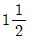
배를 합한 거리까지 계속 작동하여야 한다. - 이 장치에 의하여 제어되는 제어장치의 스위치는 2개이상의 독립된 스위치가 구비되어야 한다.
(정답률: 50%)
24. 엘리베이터를 설계할 때 지진에 대비한 설계를 하지 않아 도 되는 것은?
- 권상기
- 로프류
- 조작반
- 종점스위치
(정답률: 55%)
25. 전동기의 토크는 속도가 증가함에 따라 점차 커지고 최대 토크에 달하면 급격히 작아져 동기속도로는 0 이 된다. 이 최대 토크를 무엇이라고 하는가?
- 최소 기동토크
- 풀업토크
- 전부하 토크
- 정동토크
(정답률: 55%)
26. 균형추용 레일의 내진 설계시 고려하여 할 사항으로 적합하지 못한 것은?
- 균형추 쪽에 타이브래킷을 설치한다.
- 중간 빔을 설치한다.
- 균형추에 중간 스톱퍼를 설치한다.
- 레일 브래킷의 간격을 줄인다.
(정답률: 67%)
27. 정격속도 15m/min인 조속기 없는 유압식 엘리베이터에서 주로프가 절단될 때, 슬랙 로프 세이프티의 동작속도가 75m/min라면 세이프티의 동작시간은 약 몇 초가 되는가?
- 0.⑤
- 0.10
- 0.20
- 0.12
(정답률: 33%)
28. 도어 시스템을 구성하는 요소가 아닌 것은?
- 도어 레일
- 도어 행거
- 도어 실
- 도어 록과 스위치
(정답률: 76%)
29. 승강기의 정격속도가 60m/min일 경우 조속기 1차 스위치의 작동속도는 몇 m 이하에서 작동되어야 하는가?
- 63
- 68
- 72
- 78
(정답률: 62%)
30. 비상용엘리베이터의 설치에 관한 사항으로 옳은 것은?
- 예비전원을 반드시 설치하여야 한다.
- 일반용 엘리베이터와 동작을 연계시키도록 한다.
- 보수가 용이하도록 전선 등은 노출배선토록 한다.
- 원격조정이 가능하도록 하여야 한다.
(정답률: 80%)
31. 권상 도르레의 지름이 720mm이고, 감속비가 45:1, 전동기 회전수가 1800rpm, 1:1 로핑인 경우의 엘리베이터의 속도는 몇 m/min 인가?
- 30
- 60
- 90
- 1⑤
(정답률: 75%)
32. 공동주택에 설치하는 승강기의 제동 능력은 어느 하중 조건에서 정격속도로 하강 중 위험없이 감속, 정지할 수 있어야 하는가?
- (정격하중+카의중량+균형추의 중량)×125%
- (정격하중+카의중량-균형추의 중량)×125%
- (정격하중+카의중량)×125%
- 정격하중×125%
(정답률: 69%)
33. 전동기의 절연의 종류가 아닌 것은?
- A종
- B종
- C종
- E종
(정답률: 80%)
34. 피트깊이가 1500mm일 때, 피트바닥에서 완충기의 상단까지 700mm이고 카바닥에서 완충기 충돌판까지 450mm일 때 주행여유(Run-by)는 몇 mm 인가?
- 300
- 350
- 600
- 800
(정답률: 81%)
35. 동력전원의 설비용량을 산정하는데 필요한 요소는?
- 과전류차단기 용량
- 변압기 용량
- 배전선 굵기
- 부등률
(정답률: 66%)
36. 장애인용 엘리베이터에 대한 설계방법으로 옳지 않은 것은?
- 모든 조작스위치는 바닥으로부터 0.8m이상 1.2m 이하에 있도록 설계할 것
- 출입문의 너비를 0.9m이상으로 설계할 것
- 엘리베이터 밖의 바닥과 엘리베이터 바닥사이의 틈의 너비는 10cm이하가 되도록 설계할 것
- 카 출입문의 마주보는 벽면에는 거울을 설치할 것
(정답률: 67%)
37. 엘리베이터 제어반을 분류할 때 나머지 셋과 다른 것은?
- 카 제어반
- 전동기 제어반
- 전력 제어반
- 군관리 제어반
(정답률: 58%)
38. 대용량의 저속 화물용 엘리베이터에 적용되는 3:1 또는 4:1 로핑(roping)방식의 결점으로 틀린 것은?
- 로프의 수명이 짧아진다.
- 1본의 로프 길이가 매우 길게 된다.
- 총합효율이 매우 저하된다.
- 로프의 수명은 1:1방식과 차이가 없다.
(정답률: 90%)
39. 전동기의 관성효과를 올바르게 나타내는 것은?
- GD
- GD2
- GD3
- GD4
(정답률: 75%)
40. 권상기에 적용되는 주로프(Main Rope)가 ø16일 때 권상기 도르레의 직경으로 사용하여도 되는 것은?
- ø400
- ø480
- ø520
- ø760
(정답률: 76%)
3과목: 일반기계공학
41. 다음 중 공구재료로서 필요한 성질이 아닌 것은?
- 취성이 커야 한다.
- 인성이 커야 한다.
- 내마멸성이 커야 한다.
- 피삭재에 비하여 충분히 경도가 높아야 한다.
(정답률: 71%)
42. 나사의 피치가 3mm 인 2중 나사가 1회전하면 리드는?
- 3mm
- 4mm
- 5mm
- 6mm
(정답률: 90%)
43. 탄소강에 첨가되어 있는 원소중에서 선철 및 탈산제에 첨가되며 강의경도, 탄성한계, 인장력을 높여주지만 신도(伸度)와 충격값을 감소시키는 원소는?
- 망간
- 규소
- 인
- 황
(정답률: 57%)
44. 다음과 같은 외팔보에서 A지점의 반력 RA는?
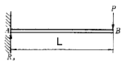
- 0
- P
- L
- p/L
(정답률: 49%)
45. 스퍼기어의 피니언이 3,000 rpm으로 잇수가 20개일 때 1,000rpm으로 감속하려면 기어의 잇수는 몇 개가 적당한가?
- 30개
- 60개
- 90개
- 120개
(정답률: 83%)
46. 다음 금속의 합금중 시효경화를 일어킬 수 있는 것은?
- 동합금
- 알루미늄합금
- 마그네슘합금
- 니켈합금
(정답률: 68%)
47. 동 및 동합금에 관한 다음 설명 중 올바른 것은?
- 황동은 구리와 주석의 합금이다.
- 전기 전도율이 은(Ag) 다음으로 크다.
- 청동은 구리와 아연의 합금이다.
- 인청동은 내마멸성이 나쁘며 베어링으로 사용할 수 없다.
(정답률: 68%)
48. 스팬ℓ 인 양단 지지보의 중앙에 집중 하중 P 가 작용하는 경우 최대 굽힘 모멘트 Mmax 은?
- Pℓ/4
- Pℓ2
- Pℓ2/2
- Pℓ/2
(정답률: 41%)
49. 원동차 지름이 200mm, 종동차 지름이 350mm의 원통마찰차에서 원동차가 12분간에 630회전할 때 종동차는 20분간에 몇 회전하는가?
- 300
- 400
- 500
- 600
(정답률: 47%)
50. 700rpm 으로 80PS를 전달하는 축의 전달 토크 T는 몇 kgf-cm인가?
- 8.18514 kgf-cm
- 81.8514 kgf-cm
- 818.514 kgf-cm
- 8185.14 kgf-cm
(정답률: 59%)
51. 탄소강에 하나 또는 여러 종류의 합금원소를 첨가하여 여러 가지의 목적에 적합하도록 성질을 개선한 강을 무엇이 라고 하는가?
- 과공석강
- 고탄소강
- 합금강
- 중금속
(정답률: 71%)
52. 그림과 같은 기어전동장치에서 기어수가 Z1 =30, Z2 =40, Z3 =20, Z4 =30 인 경우 Ⅰ축이 300 rpm 으로 우회전하면 Ⅲ축은 어느 방향으로 몇 회전 하는가? (단, Z2 는Ⅰ축의 기어와 맞물린 기어이고, Z3 는 Ⅲ축 기어와 맞물린 기어 잇수임)
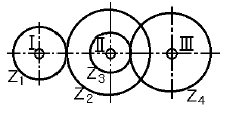
- 300 우회전
- 300 좌회전
- 150 우회전
- 150 좌회전
(정답률: 50%)
53. 안지름 16cm 의 파이프로 매분 2.4m의 물을 흘러가게 할 때 파이프의 길이 100m 마다의 마찰 손실수두는? (단, 관 마찰계수 λ= 0.03 이다 )
- 2.37 m
- 2.56 m
- 3.16 m
- 3.79 m
(정답률: 50%)
54. 다음 공작기계 중 평면절삭을 하려고 할 때 가장 적합한 기계는?
- 보링 머신
- 선반
- 드릴링 머신
- 셰이퍼
(정답률: 44%)
55. 리벳 이음에서 리벳 효율를 나타낸 식으로 옳은 것은? (단, 리벳효율은 전단파괴에 의하여 구하며, n : 1 피치내의 리벳의 전단 면수, P : 피치 (㎜) σ : 강판 재료의 허용 인장응력 (㎏/mm2) t : 강판의 두께 (㎜), d : 리벳의 지름 (㎜) τ : 리벳의 허용 전단응력(㎏/mm2) 이다.)
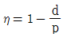
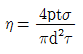
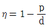
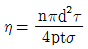
(정답률: 58%)
56. 용해온도가 낮은 동, 황동, 청동 등 비철금속을 용해시키는데 주로 이용되는 용해로는?
- 큐우폴라 (cupola)
- 전기로 (electric furnace)
- 반사로 (reverberatory furnace)
- 평로 (open heat furnace)
(정답률: 41%)
57. 다음 중 비교측정의 표준이 되는 게이지는?
- 한계 게이지
- 마이크로 미터
- 블록 게이지
- 센터 게이지
(정답률: 79%)
58. 유압의 장점에 대한 설명이 잘못된 것은?
- 힘과 속도를 자유롭게 변속시킬 수 있다.
- 열의 냉각장치를 취할 필요가 없다.
- 과부하에 대한 안전장치가 필요하다.
- 적은 장치로 큰 출력을 얻을 수 있다.
(정답률: 76%)
59. 다음 중 소성가공에서 인발(drawing)을 바르게 설명한 것은?
- 회전하는 2∼3개의 롤러 사이에 넣고 가공하는 것
- 일정한 틈을 통과시켜 잡아당겨 늘이는 가공법
- 재료를 통속에 넣고 압축하며 뽑아내는 가공법
- 판재를 형틀에 의하여 변형시켜 가공하는 가공법
(정답률: 78%)
60. 다음 그림에서 피스톤 로드(piston rod)가 미는 힘 F는? (단, P1, P2는 내부압력, D1는 실린더 내경, D2는 로드직경이다.)
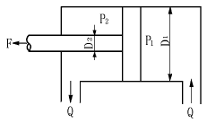
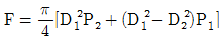
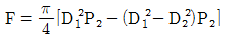
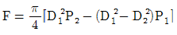
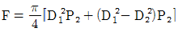
(정답률: 61%)
4과목: 전기제어공학
61. 그림과 같은 피드백회로의 종합 전달함수 C/R는?
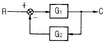
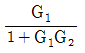
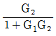
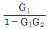
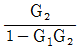
(정답률: 62%)
62. 출력 1kW, 효율 80%인 유도전동기의 손실은 몇 W 인가?
- 100
- 250
- 400
- 800
(정답률: 63%)
63. 직접 디지털제어(Direct Digital Control)의 특징이 아닌 것은?
- 제어내용은 프로그램으로 실현된다.
- 제어 알고리즘이 고정되어 있다.
- 컴퓨터의 출력을 조작부에 직접 연결할 수 있다.
- 종래의 제어기에서 실현하기 어려운 제어내용을 쉽게 실현할 수 있다.
(정답률: 62%)
64. PLC(Programmable Logic Controller)를 사용한 제어에서 CPU의 구성에 해당하지 않는 것은?
- 연산장치
- 프로그램 카운터
- 기억장치
- 범용 레지스터
(정답률: 67%)
65. 제어계의 입력과 출력이 서로 독립적인 제어계에 해당 되는 것은?
- 피드백제어계
- 자동제어제어계
- 개루프제어계
- 폐루프제어계
(정답률: 62%)
66. AC 서보전동기의 전달함수는 어떻게 취급하면 되는가?
- 미분요소와 1차 요소의 직렬결합으로 취급한다.
- 적분요소와 2차 요소의 직렬결합으로 취급한다.
- 미분요소와 2차 요소의 병렬결합으로 취급한다.
- 적분요소와 1차 요소의 병렬결합으로 취급한다.
(정답률: 53%)
67. 출력이 입력에 전혀 영향을 주지 못하는 제어는?
- 프로그램제어
- 피드백제어
- 시퀀스제어
- 폐회로제어
(정답률: 58%)
68. 그림과 같은 브리지회로에서 검류계 뀁에 전류가 흐르지 않는다면 저항 r5 의 값은 몇 Ω 인가? (단, 단위는 모두 Ω이다.)
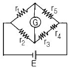
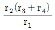
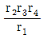
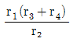
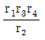
(정답률: 74%)
69. 실리콘 제어 정류기의 전압대 전류의 특성과 비슷한 소자는?
- 다이러트론
- 클라이스트론
- 마그네트론
- 다이너트론
(정답률: 43%)
70. 저항 10Ω과 정전용량 20μF를 직렬로 연결하였을 때,이 회로의 시정수는 몇 ms 인가?
- 0.2
- 0.8
- 1.2
- 1.6
(정답률: 67%)
71. 저항의 종류 중 가능한 큰 것이 좋은 것은?
- 접지저항
- 도체저항
- 절연저항
- 접촉저항
(정답률: 77%)
72. 100V의 기전력으로 100Ｊ의 일을 할 때 전기량은 몇 C인가?
- 0.1
- 1
- 10
- 100
(정답률: 74%)
73. 교류회로의 전력 P=VＩcosθ에서 cosθ를 무엇이라 하는가?
- 무효율
- 피상율
- 유효율
- 역률
(정답률: 91%)
74. T1＞T2＞0일 때,
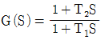
의 벡터궤적은?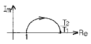
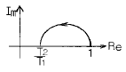
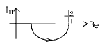
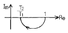
(정답률: 60%)
75. 피드백 제어와 관계가 깊은 것은?
- 방안의 난방 온도조절기를 18℃로 조절하였다.
- 승강기에 탑승하여 10층으로 이동하였다.
- 세탁기에 세탁물을 넣고 1시간 동안 작동시켰다.
- 자동 판매기에 동전을 넣고 물건을 구입하였다.
(정답률: 70%)
76. 평형 3상 Y결선에서 상전압 ES와 선간전압 EL과의 관계는?
- EL=ES
- EL√3ES
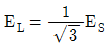
- EL3ES
(정답률: 50%)
77. 비례적분(PI)제어동작의 특징에 해당하는 것은?
- 간헐현상이 있다.
- 잔류편차가 생긴다.
- 응답의 안정성이 작다.
- 응답의 진동시간이 길다.
(정답률: 42%)
78.
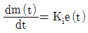
는 어떤 조절기의 출력(조작신호) m(t)와 동작신호 e(t)사이의 관계를 나타낸 것이다. 이 조절기의 제어동작은? (단, Ki는 상수이다.)- P-Ｉ동작
- P-D동작
- D동작
- Ｉ동작
(정답률: 47%)
79. 맥동주파수가 가장 많고 맥동률이 가장 적은 정류방식은?
- 단상반파정류
- 단상전파정류
- 3상반파정류
- 3상전파정류
(정답률: 62%)
80. 자동제어의 추치제어 3종이 아닌 것은?
- 비율제어
- 추종제어
- 프로세스제어
- 프로그램제어
(정답률: 18%)